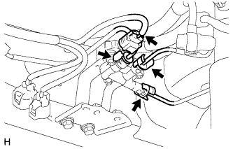
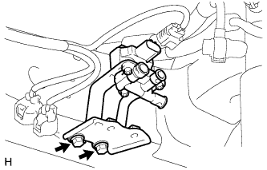

КЛАПАН УПРАВЛЕНИЯ В СБОРЕ > СНЯТИЕ |
| 1. ОТСОЕДИНИТЕ ПРОВОД ОТ ОТРИЦАТЕЛЬНОГО ВЫВОДА АККУМУЛЯТОРНОЙ БАТАРЕИ |
| 2. ОТСОЕДИНИТЕ ТРУБКУ РЕГУЛИРОВКИ ВЫСОТЫ |
|  |
Отсоедините разъем.
Отсоедините 3 трубки регулировки высоты (Нажмите здесь).
| 3. СНИМИТЕ КЛАПАН РЕГУЛИРОВКИ ВЫСОТЫ № 2 В СБОРЕ |
|  |
Выверните 2 болта и снимите клапан регулировки высоты № 2.